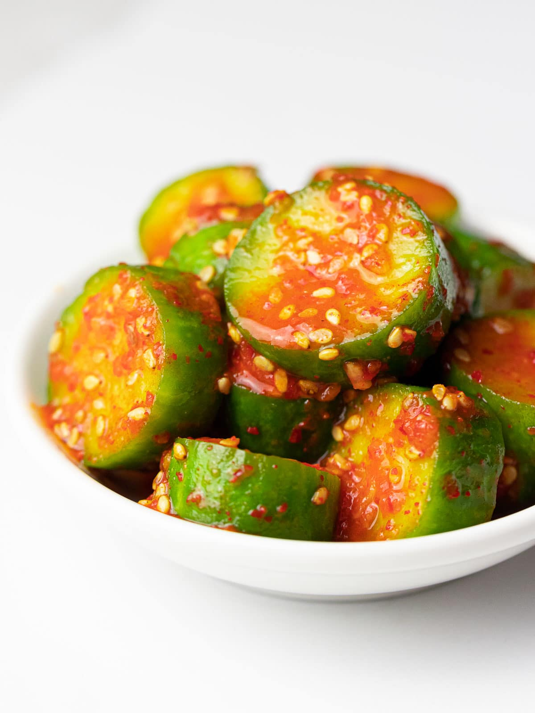

Quick Pickled Cucumbers

Description
These spicy refrigerator pickles come together in just a few minutes, and pack an impressive punch.
Pare the recipe down to cucumbers, salt, and sugar; and there are endless opportunities for other flavors.
Ingredients
- ½ lb Persian Cucumbers
- 1 tsp Salt
- 1 tbsp Sugar or Honey
- 1 tbsp Rice Vinegar
- Chili & Garlic Paste
- Sesame Seeds
Directions
- Cut the cucumbers however you like, but thinner slices will take less time. Sometimes we like thin slices for tacos, and sometimes we like thicker chunks for a cold side dish.
- Add cucumbers to a plastic or glass mixing bowl.
- Toss cucumbers with salt and sugar or honey.
- Add sesame seeds and chili and garlic paste.
- Let sit for about 10 minutes for thin slices, and longer for thicker chunks.
- Add rice vinegar and enjoy.